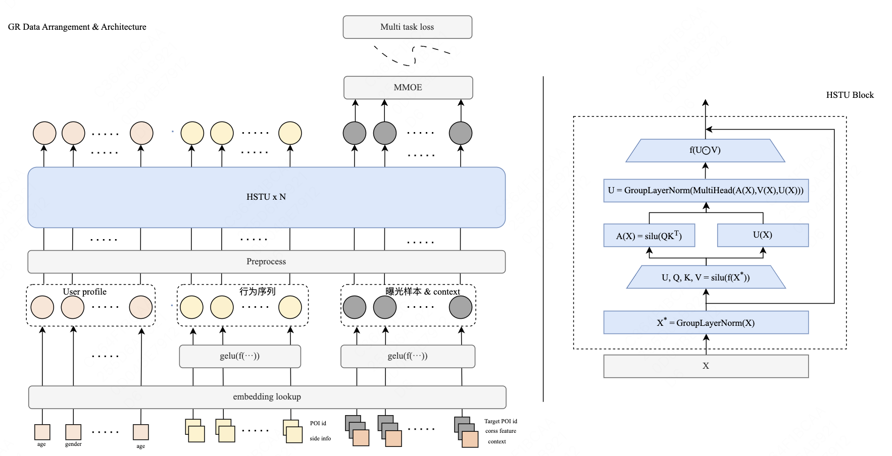
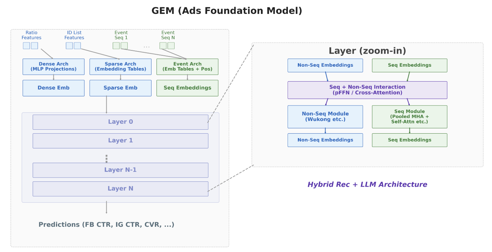
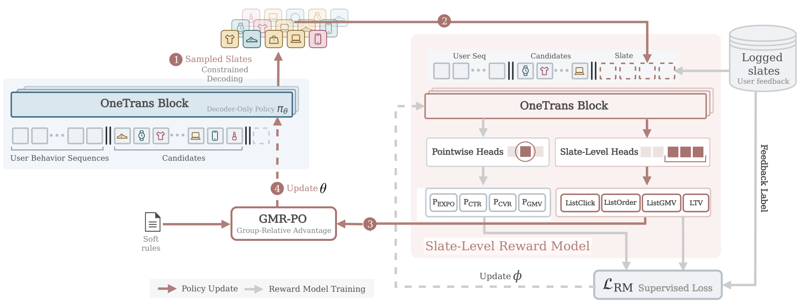

Contents · 10 sections
1What problem is it actually solving?2Pipeline overview: one central model, many surface experts3Target-aware embeddings: one per candidate item4How the central model trains: primary tasks for generality, auxiliary tasks for alignment5How the experts use these embeddings6How the system holds it up7Experiments: transfer ratio, generalization and online results8Limitations as I see them9How a recommendation team could try it10VerdictSHARE
Teams that run several recommendation surfaces and want one large model's gains to reach all of them should read this paper, because it offers a route that is simpler than distillation, transfers far more of the gain, and is already fully deployed at Meta. The core idea in one sentence: a central large model computes, in real time, one vector per candidate item that "combines the user's entire history with this item", and each surface's small model uses it as an input feature instead of imitating it as a soft label. When the large model gets stronger, the surface models capture 64% to 100% of the improvement, while the authors put distillation and static user vectors at only 10% to 30%. The online single-surface comparison lifts the topline metric by 0.050%, multiple surfaces have accumulated 0.359% since launch, and training uses about two thirds fewer GPUs than scaling each surface's model separately.
What problem is it actually solving?
Start with an illustrative scenario. A company has three recommendation surfaces, short video, feed and friend updates, and each has its own ranking model. There is already plenty of evidence that bigger recommendation models are better, so every surface wants to scale its model. The problem is that training one large recommendation model takes hundreds to thousands of GPUs; scaling all three triples compute, staffing and maintenance costs, and slows iteration. The paper sums up what makes industrial recommendation hard: models must learn from online streaming data whose distribution keeps shifting, adapt to many surfaces with different objectives, and meet strict latency limits.
The natural idea is to train just one central large model (the paper calls it the FM, foundation model) and pass its knowledge to each surface. The paper lists three existing ways to do this, each with a flaw:
| Method | How it works | Problem |
|---|---|---|
| Fine-tuning | Keep training the central model on each surface's data | Recommendation data is a stream seen once, with a constantly shifting distribution, so fine-tuning forgets easily, and coordinating updates of the central and surface models is hard |
| Distillation | The central model gives samples soft labels and the surface model fits them | The authors say that in their system it transfers only about 10% to 25% of the gain |
| Static user vector | The central model computes one fixed vector per user, fed to surface models as a feature | One vector per user cannot show interest in a specific item; the authors say it transfers only 25% to 30% |
This shows that the hard part is not "whether to share a large model" but "what form of knowledge to share": soft labels carry too little information, and static vectors are too coarse.
Pipeline overview: one central model, many surface experts

The paper calls each surface's small model an "expert". The whole pipeline is:
| Step | Who | Input | Output |
|---|---|---|---|
| 1 | Central model | The user's full cross-surface history, plus all candidate items of this request | One 1024-dimension "target-aware embedding" per candidate item |
| 2 | Logging system | These embeddings generated online | Written into the experts' training data as candidate-item features |
| 3 | Surface expert | The target-aware embedding, plus this surface's short-term history and specific features | Predictions for each of this surface's tasks (like, share, video complete and so on) |
![Paper Figure 2: structure of the central model and the expert model. Left: the central model uses HSTU to process the lifelong user history and the candidate items and outputs a target-aware embedding for each candidate; primary tasks train through a multi-task module, and auxiliary tasks train through an alignment module and auxiliary features. Right: each expert first takes these embeddings through the FM embedding module, merges them with its own lightweight HSTU (which handles short-term history) in the FM fusion module, and finally feeds them with the output of surface-specific modules into the expert fusion module.](../../../figs/2026-07-29/generative/2508.02929/arch.png)
Target-aware embeddings: one per candidate item
Why not one vector per user? Because the same user's interest in different items comes from different parts of their history. An illustrative example: a user's history has many cooking videos and some basketball highlights. Candidate A is a basketball game clip, and candidate B is a home-cooking tutorial. There is only one static user vector, so A and B both get the same "overall preference of this user"; target-aware embeddings give A a vector mostly determined by the basketball history and B one mostly determined by the cooking history.
The method appends the candidate items directly to the user history and feeds them into the sequence model together. The central model is HSTU. Each history item is represented this way: the item ID embedding and context features (surface type, time, multimodal representations extracted by a large model) first go through an MLP projection, and then the embedding of the user's action on it is added. Candidate items have not been interacted with yet, so they have no action term. For the main loss, the paper does not state how training candidates and their labels are built from interaction data, or how the target interaction is kept out of the input history so the answer does not leak into it; you must ensure that yourself when reproducing. After the sequence runs, the output at each candidate position is that candidate's target-aware embedding. For this target-aware sequential modeling, the paper does not state the attention visibility of candidate positions when several candidates share one history, or whether candidates interact. So whether an item's output changes with the candidate set or its order is something you must decide when reproducing; the safest choice is to let each candidate see only the history, not the other candidates.
There is also a compute-saving change here. The original HSTU arranges an item and its action as two alternating tokens; this paper adds the two into one token, halving sequence length. The paper says this cuts linear projection compute by 50% and attention by 25%. The second number does not match intuition: attention compute grows with the square of length, so halving length should save roughly 75%, My reading is that the paper may mean attention drops to 25% of its original cost (a 75% saving), but it does not say so, and the reader can only wonder. A quick length calculation: a user with 3,000 history entries used to need 6,000 tokens, and now needs only 3,000.
How the central model trains: primary tasks for generality, auxiliary tasks for alignment
The central model's loss is a weighted sum of two parts, primary tasks and auxiliary tasks, each task with its own weight.
- Primary tasks are objectives shared across surfaces, such as like, share and video complete, attached directly after the vectors HSTU outputs, through a simple multi-task module.
- Auxiliary tasks are each surface's most crucial tasks. The target-aware embedding and the auxiliary features go together into a lightweight MLP (the "alignment module" in Figure 2), which outputs the auxiliary task predictions for the loss. Auxiliary features are non-sequential features commonly used on each surface, selected by their importance on that surface.
Why are auxiliary tasks needed? Vectors trained only on shared objectives do not necessarily suit each surface's own tasks. Auxiliary tasks "align" the central model, during training, to the directions downstream surfaces care about.
Surfaces have different tasks, and some samples have no label at all for a given task. For example, a surface that shows no videos has no "video complete" label. The paper's handling is direct: for a task a sample does not have, the loss is set to 0.
How the experts use these embeddings
Once the target-aware embeddings enter the expert, they go through three steps in order:
- FM fusion module (an MLP in the paper): combines the central model's vector with the output of the expert's own lightweight HSTU. The lightweight HSTU only looks at this surface's short-term, real-time history. For this lightweight sequence module, the paper does not state whether the expert's output is user-level or per-candidate, or which position's representation is fused with each candidate's FM embedding.
- Expert fusion module: the fused vector is then merged with the output of surface-specific modules.
- Finally it goes into a standard multi-task multi-label model that predicts each of this surface's tasks.
Why a "feature" rather than a "label"? Distillation only lets the surface model imitate the central model's scores, so what the central model knows is squeezed into one number. As an input feature, the expert can let this 1024-dimension vector interact directly with its own surface features, which in effect plugs in the central model's compute and context. This means the expert can be very small: each expert's training uses no more than 12% of the central model's GPUs.
How the system holds it up
The paper calls the supporting system HyperCast, with four key points.
First, online serving. When a request arrives, the central model computes vectors for each candidate in real time and hands them to the right surface's expert in the same request path. Compared with the original single-stage model, end-to-end latency is 1.2% higher at p50, 1.6% lower at p95 and 2.2% lower at p99, and total CPU is essentially unchanged (within 0.02%).
Training is decoupled. Embeddings generated online are logged directly as candidate-item features, and experts read them from their own training data, so the central model and the experts train separately without waiting on each other. The paper says this also rules out information leakage by construction. My reading: every vector an expert trains on was generated online in real time when that sample happened, before the central model had trained on that sample, so the vector cannot carry that sample's label information.
The third point is freshness. The central model trains in streaming mode, updating every few minutes, and data takes about 30 minutes on average from event to training. This matters a great deal; the table below shows the change in the expert's NE on the "video complete" task when the update frequency is slowed, where larger is worse:
| Central model update frequency | NE change |
|---|---|
| Every few minutes (baseline) | 0 |
| 1 hour | +0.10% |
| 6 hours | +0.27% |
| 24 hours | +0.55% |
In the paper an NE change of 0.05% already counts as significant, so slowing to 1 hour is already a regression twice the significance line. This shows that minute-level updates matter for the best results: the staler the vectors, the more downstream drops.
Last is version management and drift. The system logs embeddings from all central model versions in use at once, and each expert specifies just one version, which makes it safe to try different combinations. The central model's embedding distribution drifts over time: the paper uses MMD (maximum mean discrepancy, a measure of the difference between two vector distributions) with a Gaussian kernel to compare vectors the central model generated at one moment with those generated over the following 5 hours. In the paper's words, after 3 hours this difference is indistinguishable from "comparing against a random Gaussian reference"; my reading is that the drift becomes as large as swapping in a batch of random vectors. Even so, the experts' predictions stay stable.
Experiments: transfer ratio, generalization and online results
All experiments use Meta internal data, with no public dataset. The offline metric is NE, where lower is better.
The central model comes in two versions, with 0.5B and 1B dense parameters (trillion-parameter scale with the sparse embedding tables), trained on 160 and 512 H100s respectively.
First, the comparison of target-aware embeddings with other methods; the numbers are the NE change relative to a baseline without any central model, and negative means better:
| Method | Like | Share | Video complete |
|---|---|---|---|
| Static user vector | -0.64% | -1.15% | -0.78% |
| Distillation | -0.51% | -0.40% | -0.48% |
| Target-aware embedding | -2.13% | -3.02% | -2.96% |
The comparison is fairly fair: the static user vector has 32 times this paper's dimension and is trained on history over the same time range, but its freshness is on the order of hours; distillation's teacher is the 1B central model itself, with the same freshness as this paper. The distillation comparison controls for teacher and freshness, so that gap comes mainly from the form of knowledge: used as a feature, it beats a soft label. The comparison with static user vectors still mixes in a freshness difference, so it cannot be put entirely down to the form of knowledge.
Next, the transfer ratio. The paper defines it as "the expert's NE improvement" divided by "the central model's NE improvement". A worked example with made-up numbers (not the paper's results): switching the central model from 0.5B to 1B lowers NE from 0.800 to 0.790, an improvement of 0.010; after the same expert switches to the 1B vectors, its NE drops from 0.850 to 0.8425, an improvement of 0.0075, so the transfer ratio is 0.75. In the experiment the two experts have identical structure and differ only in which central model their input vectors come from, and both warm-start from a model trained for over a month on 0.5B vectors. Across three surfaces and 15 tasks the transfer ratio ranges from 0.64 to 1.0; some results:
| Surface | Task | Transfer ratio |
|---|---|---|
| A | Share | 1.00 |
| A | Video complete | 0.91 |
| B | Video complete | 0.68 |
| B | Surface task 1 | 0.64 |
| C | Surface task 2 | 0.93 |
This shows that once the central model gets stronger, most of the improvement really does reach downstream, with no need to scale a separate model for each surface.
Tasks the central model never trained on benefit too. In the Surface D experiment, the central model used only one primary task of this surface as an auxiliary task, and only about 20% of Surface D's data (the online baseline model used all of it). On the four other tasks the central model never trained on, the expert improves NE by 0.40% to 0.60%, all significant. This shows the vectors carry general user interest, not just those few training objectives.
The online experiments run on a platform with tens of billions of requests a day. Consumption means metrics like watch time, engagement means likes, comments and shares, and topline means global metrics such as app stay time and daily active users. The results come in two forms:
| Scope | Consumption | Engagement | Topline |
|---|---|---|---|
| Single-surface comparison (against the single-stage baseline) | +1.079% | +1.63% | +0.050% |
| Cumulative since launch (several central model upgrades, several surfaces) | +6.512% | +11.24% | +0.359% |
The paper says that at their scale a 0.01% topline change already matters, so 0.050% on a single surface is a large gain. The paper also mentions a notable shift of engagement toward fresher content, and its table lists a separate freshness metric, +2.749% on a single surface and +12.65% cumulative, though without a definition of that metric.
Limitations as I see them
First, the comparison numbers behind "3 times better than distillation" are incomplete. The transfer-ratio table only has this paper's results; the transfer ratios of distillation and static vectors appear only in the introduction's text, with no matching experimental table. What Table 1 lets you compare directly is the NE improvement, where this paper is about 4.2 to 7.6 times distillation (my calculation from the table), but that is a different measure, so a reader cannot check where "3 times" comes from.
Second, the results are hard to reproduce and compare. There is no public dataset, surfaces and surface tasks are anonymized, and offline only NE is reported. The baseline of the online "single-surface comparison" serves a surface directly with the central model's predictions; by the paper's description it is not the same as that surface's original production model, so 0.050% does not mean quite the same thing as an ordinary A/B test.
Third, the cost accounting covers only part of the bill. Online latency and CPU are reported, but for every request the central model has to append all candidates to the lifelong history and run the sequence in real time. How intermediate history computation is shared across candidates, and whether caching is used, comes with no numbers; only the latency and CPU results are given. On top of that it has to log 1024-dimension vectors per candidate while keeping several versions; you have to estimate that GPU and storage cost yourself. The freshness table also shows that if the central model's streaming training stops for a few hours, all surfaces regress together. This is a new single point of risk, and the paper's answer is dedicated monitoring, on-call and automatic rollback.
How a recommendation team could try it
- Check the conditions first: do you have two or more recommendation surfaces that share users, and a large sequence model that already trains in streaming mode with minute-level updates? These are not hard requirements, but without them both the benefit of amortizing the central model's cost and the gains from freshness shrink.
- Validate the form of knowledge offline: on one surface, compare three hookups at once: distillation soft labels, static user vectors and target-aware embeddings (append candidates to the history and take the outputs). Look only at NE, and first confirm that target-aware embeddings win on your own data.
- Measure freshness: artificially age the central model's vectors by 1 hour and 6 hours, see how much downstream NE drops, and decide whether a real-time path is worth building.
- Then build the online path: generate vectors online in real time and log them into the experts' training data, pin each expert to one central model version, and first compare against that surface's existing production model on one surface.
- Finally, measure the transfer ratio: upgrade the central model once, record the NE improvement of the central model and of each expert, compute the transfer ratio, and decide whether future compute should go to the central model or to the experts first.
Verdict
| Dimension | Assessment |
|---|---|
| Problem importance | High. Every multi-surface recommender hits the problem that "the large model can only be used on one surface" |
| Novelty | Medium. Target-aware embeddings and using model outputs as features are not new concepts; what is new is making them a shared multi-surface production solution under streaming, minute-level updates |
| Experimental evidence | Medium. There are transfer ratios, unseen tasks and cumulative online gains at very large scale; but it is all internal data with anonymized surfaces, and distillation's transfer ratio has no experimental table |
| Engineering cost | High. It needs minute-level streaming training, real-time vector serving, per-candidate logging and multi-version management |
| Worth trying? | Teams that already have a large sequence model and several surfaces should first compare the three knowledge forms offline; teams with a single surface gain little |
How did this read for you?
Hoot made a note. Thanks for the feedback.
One tap, no sign-in; tap again to undo. Only anonymous counts are kept, never who you are.
Related papersMore from Paper Daily

Generative · 2026-08-10MTGR: Putting Generative-Recommendation Scaling Laws into Production at Meituan Food DeliveryDeep dive: MTGR: Putting Generative-Recommendation Scaling Laws into Production at Meituan Food Delivery.
Personalization · 2026-08-04GEM Training: How Meta Doubled the Efficiency of Its LLM-Scale Ads Foundation ModelDeep dive: GEM Training: How Meta Doubled the Efficiency of Its LLM-Scale Ads Foundation Model. Personalization · 2026-10-20Predictable Scaling: Efficient Model Exploration via Scaling-Law PredictionPredictable Scaling evaluates ranking-model changes with reduced-scale proxies and estimates their full-scale effects using historical learning curves. Training compute falls by 88% and 79% on two industrial ranking models.
Personalization · 2026-10-20Predictable Scaling: Efficient Model Exploration via Scaling-Law PredictionPredictable Scaling evaluates ranking-model changes with reduced-scale proxies and estimates their full-scale effects using historical learning curves. Training compute falls by 88% and 79% on two industrial ranking models.
Generative · 2026-11-05OneTrans-GSR: A Generative Slate Ranking Paradigm Unifying Reranking and Mix-Ranking with One Autoregressive TransformerTeams working on reranking and mix-ranking should read this: it turns two stages that have long run on rules into a generation problem that improves with more compute, and the system is fully deployed. The reranking and mix-ranking steps that decide what fills the screen have long run on hand-written rules and small models: how product cards, short videos, livestreams and ad cards interleave is t…
Discussion
Add experiment details, reproduction notes or a different take. Requires a GitHub sign-in.
Loading the discussion…